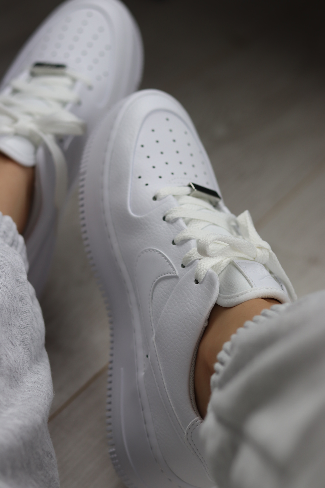

The differences between cheap and expensive paint. During the past two years I have spent painting shoes, I learned which paint produced the best quality end result. I started with 99 cent paint from Walmart. Being so cheap, I had stocked up on a large variety of colors which I used throughout high school art projects. The problem: water content. When the paint was too runny it would either drip over the shoe or have no pigment and would lead to way too many coats. Currently, I use acrylic paint in tubes to paint shoes. Acrylic is thick and pigmented enough to create a good image after one to two coats. The most ideal paint to use on the shoes would be some type of outdoor leather paint.
Air forces and typically most shoes come with a coating. For the paint to stick best to the shoe, this coating needs to come off. First, I start by putting rubbing alcohol on a cotton swab and rub all over the areas I am going to paint. Then, I go over those areas with a fine sandpaper. The goal is not to completely scratch and ruin the shoe but to remove the coating and provide texture. I repeat that process a few times until I can feel and see a difference in the shoe canvas. There should be less shine in the light and not feel as smooth as the other surfaces. Depending on the design, I sketch in very light pencil an outline.
Getting to paint is the fun part. Many of the shoes I have painted I free hand. I begin by painting the base color of everything and then give a solid fifteen minutes in between coats. For shoes with block color I will do anywhere from 2-4 coats. I paint these with a decent size brush so that it is a more time efficient process. On the more detailed shoes I paint, I use much smaller brushes and more like 1-3 coats. If I am layering colors, for example white on top of pink, I give anywhere between 2-12 hours for them to dry before I apply the white. This part of the process takes the most patience.
I will admit I have still not found the best way to seal the shoe. I tried modge podge but all that did was make the paint crack. The only product I have used is a water repellent shoe spray. This spray is made to make shoes waterproof. This spray has never not preserved the design and protected the paint. At around six months friends and customers have begun to see wear but that also comes with wearing any shoe. This is the product I would recommend but there are a number of different shoe or paint sealants out there that I am sure would work equally as well.
